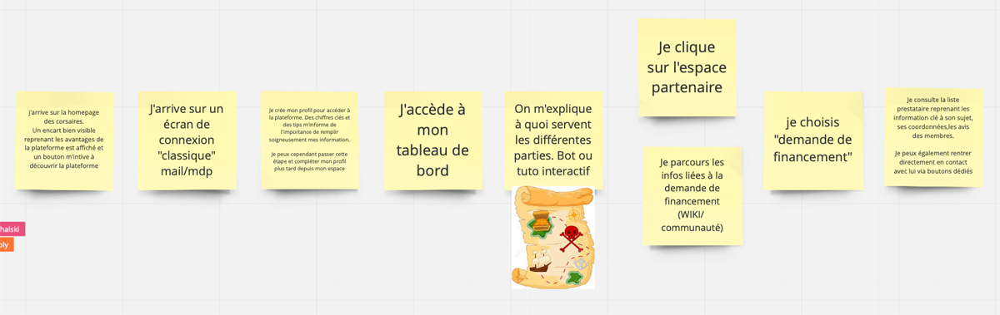

Dans cette partie, nous allons définir les points d'entrée et de sortie qui sont respectivement : d'où vient l'utilisateur et comment cet utilisateur va être informé de son action sur un site ou une application.
Point d'entrée : (d'où vient l'utilisateur, les sources ayant attiré le consommateur)
Je dispose d’un patrimoine immobilier, je souhaite trouer une personne pour s'occuper de mon bien loué à ditance en cas de problème
Point de sortie : (prise de contact après le parcours client)
Non défini
Ensuite pour les "pendants", il y a la familiarisation où l'on appâte le client en montrant qu'on a résolu les problèmes qu'il a rencontrés ; les objectifs où l'on définit ce que l'on souhaite faire ou voir sur l'application et le parcours d'actions qui est le parcours du client.
Pendant - Familiarisation : (qu'est-ce qu'on va me proposer)
Une communauté d'entraide gratuite entre propriétaires investisseurs, une plateforme disposant de différents outils, des structures partenaires.
Pendant - Objectifs :
Guider et engager l'utilisateur à se rendre sur la plateforme des prestataires pour répondre à ses besoins récurrents.
Pendant - Utilisation : (parcours client défini par des verbes d'action)
- J'arrive sur la homepage des Corsaires. Un encart bien visible reprenant les avantages de la plateforme est affiché et un bouton m'invite à découvrir le site
- J'arrive sur un écran de connexion (mail,mdp)
- Je créer mon profil pour accéder à la plateforme. Des chiffres clés et des tips m'informe de l'importance de remplir soigneusement mes informations. Je peux cependant passer cette étape et compléter mon profil plus tard depuis mon espace
- J'accède à mon board
- On m'explique à quoi servent les différentes parties. Bot ou tuto intéractif
- Je clique sur l'espace partenaire. Je parcours les infos liées à la demande de financement (wiki / communauté)
- Je choisis "demande de financement"
- Je consulte la liste de prestataires reprenant les informations clés à son sujet, coordonnées, les avis des membres
- Je choisis lorganisme



{kind=link}
{kind=link}
{kind=link}
{kind=link}
{kind=link}
{kind=link}
{kind=link}
{kind=link}
{kind=link}
{kind=link}
{kind=link}
{kind=link}
{kind=link}
{kind=link}
{kind=link}
{kind=link}